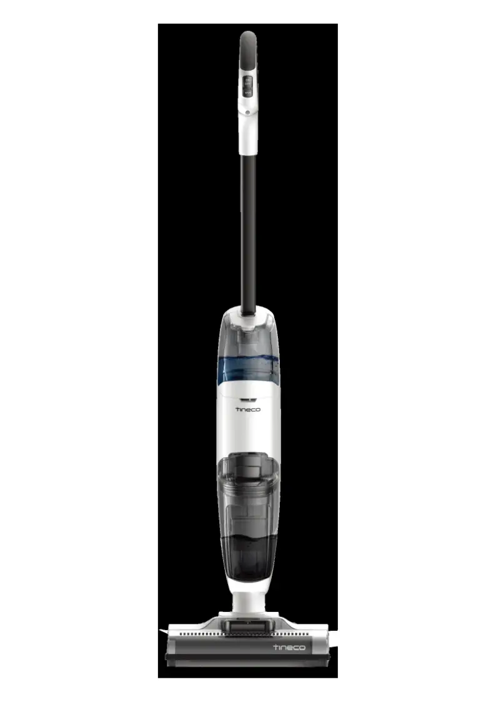
2. Tear down Assy brush part 4
4. Tear down Main Motor/Battery/PCBA 6
History
| No | Date | Comments | Version | ISSUE | Approve |
|---|---|---|---|---|---|
| 1 | 24.05.09 | First Draft | 1.0 | Qiu | |
Tools
Electric screwdriver\Long-nose pliers\Slotted screwdriver\Zip tie\Scissors
Range of Product
Note：iFloor and iFloor 2 structure is similar, and they share the same repair manual.
In case of any issues, please feel free to contact our technical support for assistance.
| No | Product Name | Factory Serial Model | SKU | Note |
|---|---|---|---|---|
| IFloor | CL1762B-01 | USIFL1GRY | IFloor | |
| IFloor | CL1762U-01 | iF1US0A00 | ||
| IFloor | CL1762U-02 | iF1CA0A00 | ||
| IFloor | CL1762U-04 | FW020100US | ||
| IFloor | CL1762U-06 | FW020300US | ||
| IFloor | CL1762U-07 | FW020100CA | ||
| IFloor | CL1762U-08 | FW020100MY | ||
| IFloor | CL1762U-10 | FW020100ID | ||
| IFloor | CL1762U-11 | FW020100IL | ||
| iFloor 2 Blue | CL2041D-02 | FW012100US | IFloor 2 | |
| iFloor 2 Max | CL2041G-01 | FW012600RU | ||
| iFloor 2 Plus | CL2041A-02 | FW010700AU | ||
| iFloor 2 Complete | CL2041-06 | FW011100CA | ||
| iFloor 2 Plus | CL2041B-04 | FW011400DE | ||
| iFloor 2 MAX | CL2041F-01 | FW012400SA | ||
| iFloor 2 Max | CL2041D-03 | FW012200CA | ||
| iFloor 2 Max | CL2041D-01 | FW011800US | ||
| iFloor 2 | CL2041B-06 | FW011600MY | ||
| iFloor 2 | CL2041A-01 | FW010400JP | ||
| iFloor 2 Plus | CL2041H-01 | FW012800UK | ||
| iFloor 2 | CL2041B-05 | FW011500ID | ||
| iFloor 2 | CL2041A-03 | FW010900AU | ||
| iFloor 2 Plus | CL2041-05 | FW010800US | ||
| iFloor 2 | CL2041-03 | FW010100CA | ||
| iFloor 2 | CL2041B-02 | FW011000CL | ||
| iFloor 2 | CL2041B-03 | FW011200DE | ||
| iFloor 2 | CL2041-01 | FW010100US | ||
| iFloor 2 | CL2041B-01 | FW010600VN | ||
| iFloor 2 Max | CL2041B-07 | FW012900VN |
Range of Spare Part
| No | Spare Part Name | Remark |
|---|---|---|
| 1 | ADAPTER | |
| 2 | Charging Base | |
| 3 | Repair Wheel | |
| 4 | Brush Roller cover | |
| 5 | Scraper | |
| 6 | Pre-filter assy | 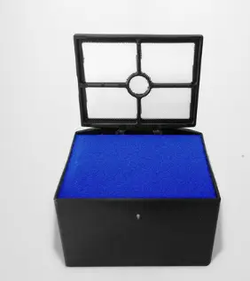 |
| 7 | Motor | Main Motor |
| 8 | Pump | |
| 9 | PCBA | |
| 10 | Clean Water Tank | |
| 11 | Belt | |
| 12 | Motor | Brush Roller Motor |
| 13 | Brush Roller | |
| 14 | Dirt water tank | |
| 15 | Battery（2500mAh） |
Tear down Guide
Tear down Accessory
Disassembly all accessories
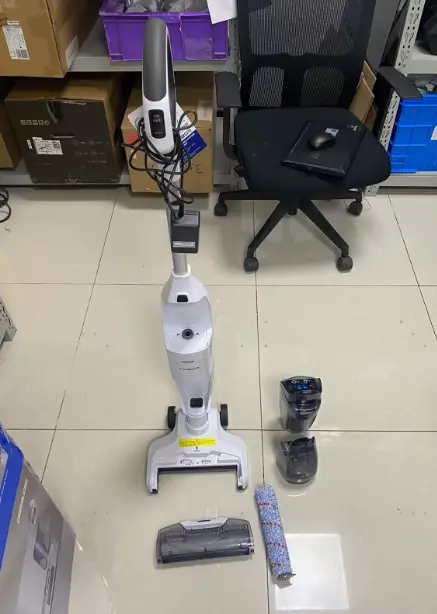
Tear down Assy brush part
Unscrew screws and take out scraper
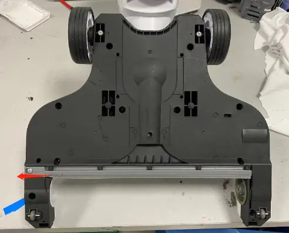
Unscrew screws and take out brush cover
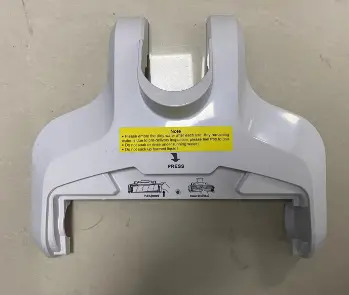
Unscrew screws and disassembly brush roller motor（including belt）
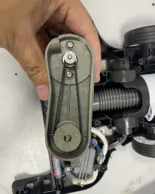
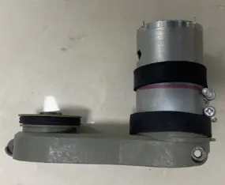
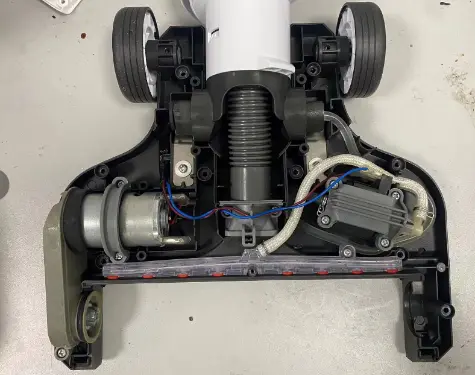
Unscrew screws and disassembly pump
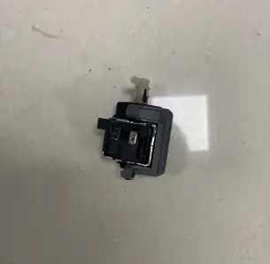
Pull the wheel to disassembly it
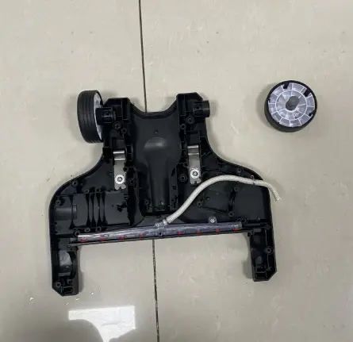
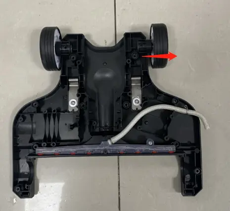
Tear down housing body
Refer to the screen tearing down steps (2.0） to disassembly Assy brush part
Unscrew 10pcs screws.
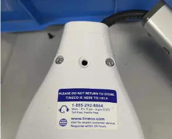
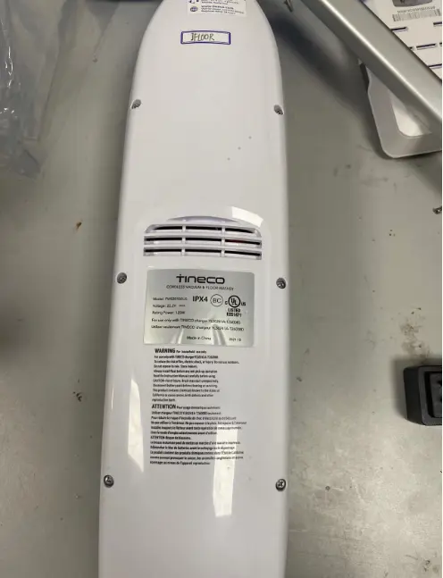
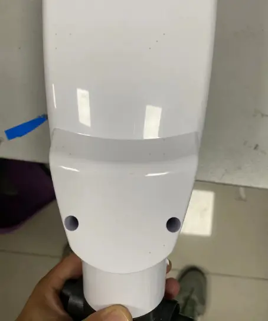
Disassembly housing body
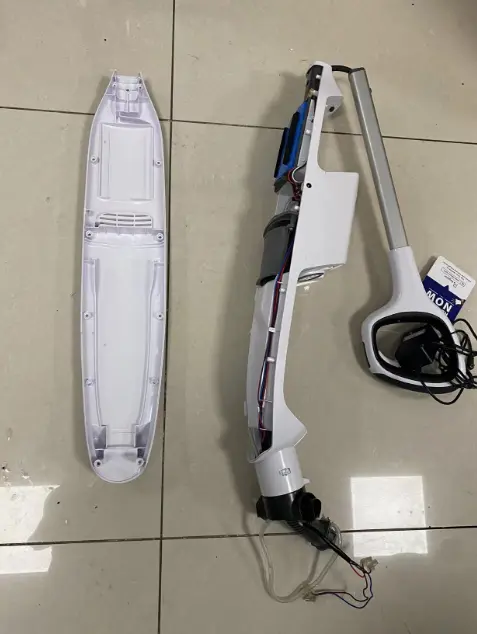
Tear down Main Motor/Battery/PCBA
Refer to the steps 2.0~3.0 to disassembly the Assy brush part & housing body
Spread the housing body and unplug terminal to take out Assy Main Motor
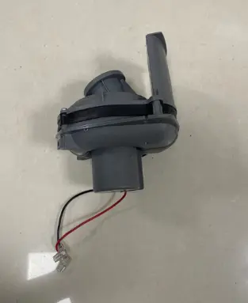
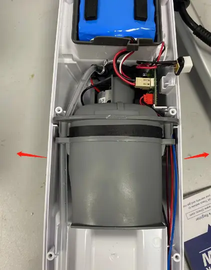
Unplug the terminal and remove battery
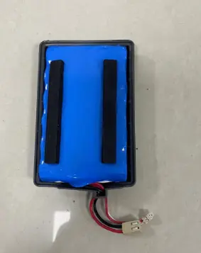
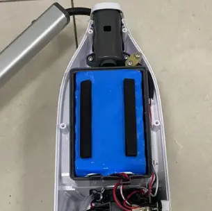
Unplug the terminal and remove PCBA
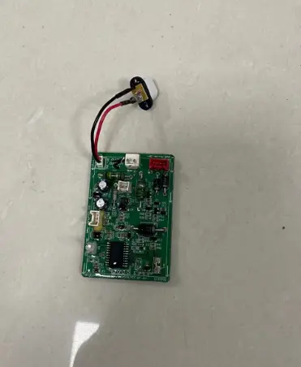
Tear down handle
Refer to the steps 2.0~4.0 to disassembly the Assy brush part & housing body&PCBA
Remove screws and disassembly handle
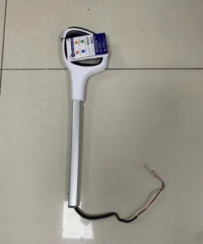
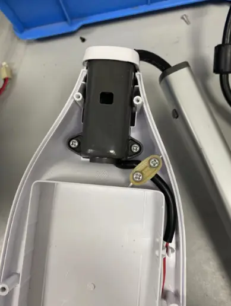
Repair Guide
| Failure System | Failure Phenomenon | No | Failure Mode | Repair Solution | Spare Parts |
|---|---|---|---|---|---|
| Water circulation system failure | No/less spray water | 1 | CWT failure | replace CWT | CWT |
| 2 | spray hole blocked | clean spray hole | maintenance | ||
| 4 | pump failure | replace pump | pump | ||
| 6 | pipe blocked | replace water pipe | water pipe | ||
| 7 | pipe bent or broken | fix or replace pipe | water pipe | ||
| 8 | main pcba failure | replace main pcba | main pcba | ||
| leaking water | 9 | CWT leaking water | replace CWT | CWT | |
| 10 | pump failure | replace pump | pump | ||
| 11 | water pipe loose | Re-plug water pipe | water pipe | ||
| 13 | DWT broken | replace DWT | DWT | ||
| 15 | water pipe damage | replace water pipe | water pipe | ||
| no suck up water | 19 | Debris channel /Air duct blocked | 1.Clean the debris channel blockage、debris wrapped around the brush roller 、suction nozzle blockage; 2.Dry and clean HEPA; 3.Empty and clean the DWT | maintenance | |
| Scraper broken | replace scraper | scraper | |||
| 20 | brush roller damage | replace brush roller | brush roller | ||
| motor failure | replace main motor | main motor | |||
| brush motor failure | replace brush roller motor | brush roller motor | |||
| Charging system failure | No response when charging | adapter failure | replace adapter | adapter | |
| main body wire damage | replace body wire | wire | |||
| battery pack failure | replace battery pack | battery pack | |||
| Main PCBA failure | replace main PCBA | main PCBA | |||
| red light blinking when charging | adapter failure | replace adapter | adapter | ||
| battery pack failure | replace battery pack | battery pack | |||
| Main PCBA failure | replace main PCBA | main PCBA | |||
| Turn on failure | Press the on/off button but no reaction | handle failure | replace handle | handle | |
| battery pack failure | replace battery pack | battery pack | |||
| Main PCBA failure | replace main PCBA | main PCBA | |||
| stop running after several times and red light blinking | battery pack failure | replace battery pack | battery pack | ||
| Main PCBA failure | replace main PCBA | main PCBA | |||
| Self-cleaning malfunction | Press the on/off button 3s but no reaction | handle failure | replace handle | handle | |
| battery pack failure | replace battery pack | battery pack | |||
| Main PCBA failure | replace main PCBA | main PCBA | |||
| stop running and red light blinking | battery pack failure | replace battery pack | battery pack | ||
| Main PCBA failure | replace main PCBA | main PCBA |